MVA.RmdThis tutorial illustrates a multivariate statistical analysis workflow for NMR-based metabolic profilig using the metabom8 R package.
Proton (1H) NMR data are available in the nmrdata package (www.github.com/tkimhofer) and constitute standard 1D experiments acquired from murine urine samples. Samples were collected longitudinally with a single collection point before and multiple collection points after bariatric surgery was performed. Data acquisition was performed on a 600 MHz Bruker Avance III spectrometer, equipped with a 5 mm triple resonance (TXI) probe operating at 300 K. Further information on study design, experimental setup and data collection can be found in Jia Li et al.1
# For reproducibility set.seed(153)
Data have been preprocessed as illustrated in Tutorial I. In short, spectral reagions that bear no quantitative or biological information were excised and baseline correction was performed proir to spectral normalisation with probabilistic quotient normalisaion (PQN).
Let’s get started with the analysis:
Pre-processed data are imported with the data command. The data are saved as a list and the first task is to assign each list element to a variable.
# Load data data(bariatric) # Declare variables Xn<-bariatric$X.pqn # PQN-normalised NMR data matrix dim(Xn) #> [1] 67 56357 ppm<-bariatric$ppm # chemical shift vector in ppm length(ppm) #> [1] 56357 meta<-bariatric$meta # spectrometer metadata dim(meta) #> [1] 67 417 an<-bariatric$an # sample annotation dim(an) #> [1] 67 4 # list all environment varaibales ls() #> [1] "an" "bariatric" "meta" "ppm" "Xn"
The following variables should be in the R workspace after executing the code snippet above:
Let’s start with a visual inspection of the pre-processed NMR spectra using the matspec() function:
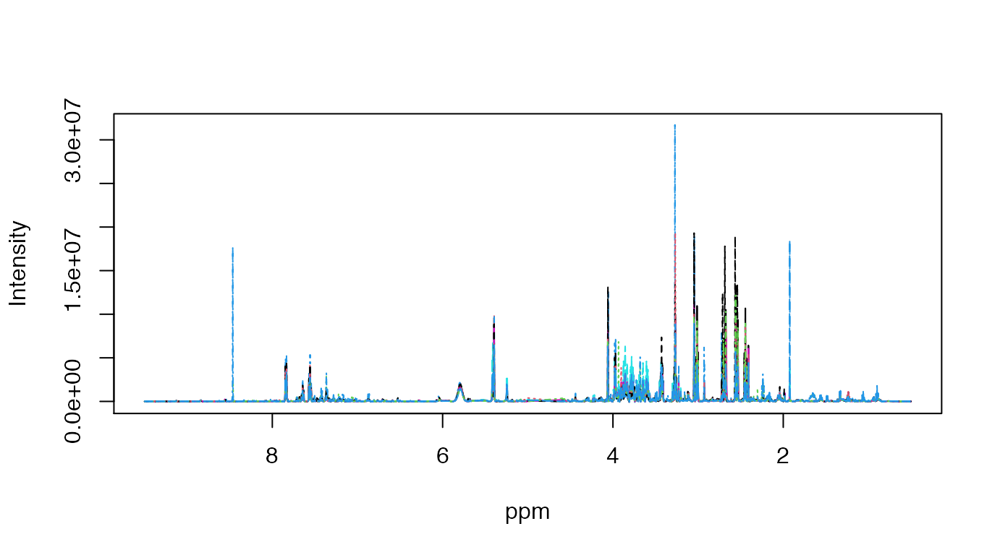
The pre-processed specra range from 0.5 to 9.5 ppm, the water signal has been removed and the baseline is fairly flat.
In the first analysis step, data are interrogated using Principal Component Analysis (PCA). PCA is a compression technique that represents the high-dimensional spectrometric data (this relates to the number of spectral variables, here > 56,300) with only a few latent (in the sense of unobserved) components. Each PCA component, referred to as principal component (PC), is a composite of the original variables, formed by weighting and linearly combining the original variables. The weightings (referred to as PCA loadings) are determined to preserve systematic variation trends across samples. Collinear variables, e.g., metabolites that share structural or biological relationships, have similar PC weightings, and different PC’s describe different variation trends.
Typically, PCA allows to become a fairly good overview of variable patterns by looking at the first few PCA components.
In metabom8, a PCA can be calculated with the pca() function. Input arguments are the pre-processed NMR matrix (X=Xn), information on the desired number of principal components (pc=2) and variable centering and scaling parameters. Here the data will autoscaled, this includes mean centering (center=TRUE) and unit variance scaling (scale=“UV”).
# Perform PCA pca_model=pca(X=Xn, pc=2, scale='UV', center=TRUE)
The variable pca.model is an R object that contains different slots containing information about the PCA model - this includes PCA scores (t) and loadings (p) for each of the principal components.
Visualising PCA scores can be achieved with the plotscores() and plotload() functions. The input of this function is the pca model (model=pca.model), further input parameters include axis definition (which principal components are plotted in x/y space, pc=c(1,2)) and a list object with its first element specifying the point colouring variable (an=list([variable])).
In this example, point colour should indicate the treatment (eg. surgical procedure), which is either none (Pre-op), Roux-en-Y gastric bypass (RYGB, a type of bariatic surgery) or sham surgery2. The latter is a control group, included to account for incidential effects induced by the surgical procedure (anesthesia, incision, etc.).
# Plot PCA results: scores of the first two components plotscores(obj=pca_model, pc=c(1,2), an=list(Surgery=an$Class), title='PCA - Scores plot')
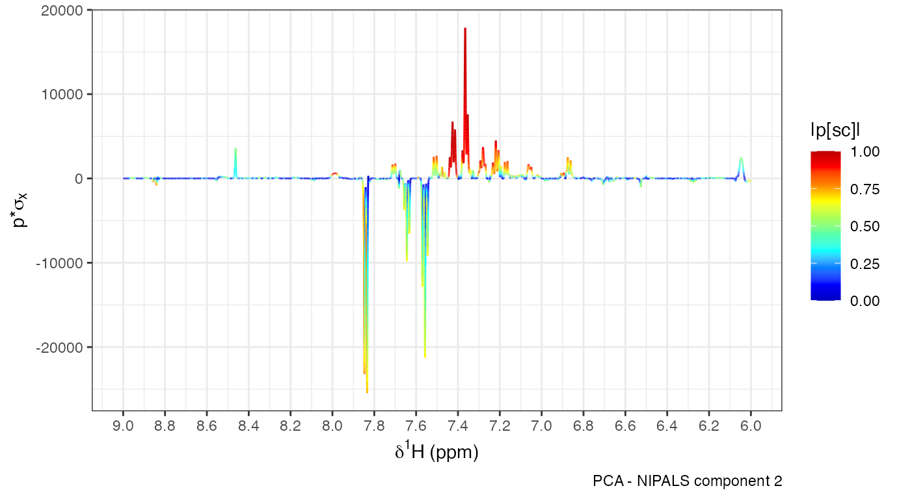
The produced scatterplot shows PCA scores of the first two PCs, plotted in x/y space. Each point represents an NMR spectrum (row of the matrix Xn). The percentages in the axis labels describe the amount of variation that is accounted for by the repsective PC, relative to the total amount of variation in the data (this number is also termed R2). The dotted ellipse represents the Hotelling’s T2, this is a statistical measure to identify outlier samples and can be thought of a multivariate generalisation of a confidence interval.
Additional graphics parameters can be passed to the plotscores() function. For example, point shape and text labels are included as list element two and three of an, repsectively. See the following code for an example:
# define scores that should be labelled idx<-which(pca_model@t[,2]>20 & an$Class=='RYGB') # PC 2 scores above 20 and in group RYGB # construct label vector with mouse IDs outliers<-rep('', nrow(an)) outliers[idx]<-an$ID[idx] # Plot PCA scores, colour according to class, point shape according to time of sample collection and label outliers plotscores(obj=pca_model, pc=c(1,2), an=list( Class=an$Class, # point colour Timepoint=an$Timepoint, # point shape ID=outliers), # point label title='PCA - Scores plot')
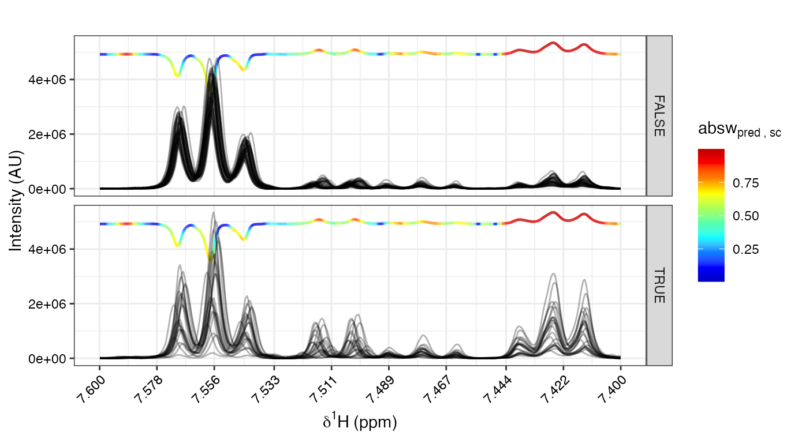
In NMR-based metabonomics, PCA loadings are visualised as a line plot that resembles an NMR spectrum. In metabom8, this is achieved with the plotload() function. The funtion’s input arguments are the PCA_metabom8 model (mod=pca_model) and the number of the PC to be visualised (eg., pc=1). The code snipped below, the first and second PC loadings are visualised (one at a time), with the latter focussing on the aromatic chemical shift region (6 - 9 ppm).
# Plot PCA loadings plotload(mod=pca_model, pc=1) # 1st principal component plotload(mod=pca_model, pc=2) # 2ndt principal component plotload(mod=pca_model, pc=2, shift=c(6,9)) # 2ndt principal component chemical shift reagion 6-9 ppm
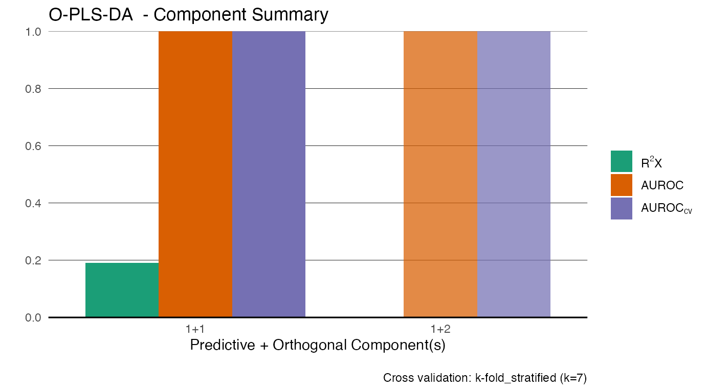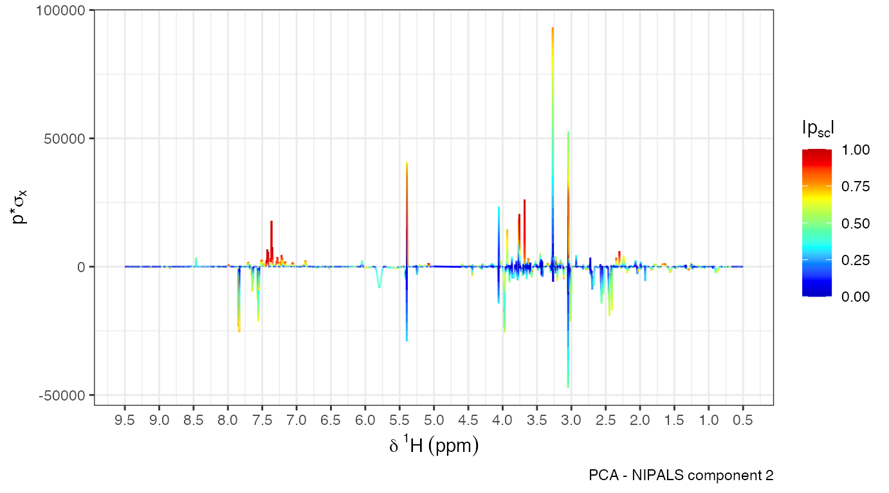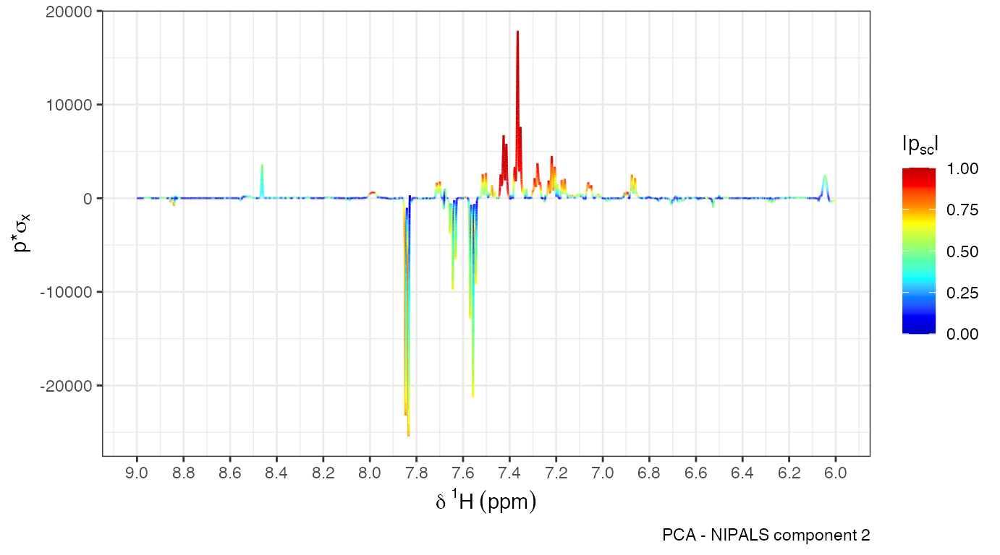
In the loadings plot, the x axis describes the chemical shift of each variable, just like in an ordinary NMR spectrum, the y axis is the covariance of the PCA scores and original spectral variables (indicating the peak magnitude and positive or negative model loadings), and the colour represents the PC loading for each variable normalised to range between zero and one. PCA loadings and scores plot are linked such that peaks coloured towards the red colour spectrum are characteristic for spectra with postive (negative) scores when these point up (down) in the loadings plot.
A scores clustering trend according to surgery type is visible in PCA scores plot. However, PCA is an unsupervised analysis method and is not designed to tease out data patterns related to group effects (eg., sham vs RYGB surgery) or numeric trends related to an outcome variable (eg., recovery time after surgery). Performing PCA with NMR spectra derived from human urine samples typically highlights environmental effects (e.g., diet and drug metabolites) in the first few principal components. In contrast, the murine individuals were housed in a controlled enviroment (with defined diet and day/night cycle), which greately reduces the metabolic variation so that the treatment effects can already be observed in the first two PCA components.
To explicitly model study group effects, sham vs RYGB surgery, we use an extension of a supervised analysis method called Orthogonal-Projections to Latent Structures or also known as Orthogonal Partial Least Squares (O-PLS).3
O-PLS can be seen as a supervised extension of PCA, where the NMR data matrix (usually termed X) is related to an external variable (usually termed Y) that encodes study outcome information (eg. Sham vs RYGB surgery). O-PLS is separating systematic data variation into Y-predictive and Y-orthogonal, creating a single predictive component and one or more orthogonal components. Consequently, only the predictive component is interpreted in relation to Y. The orthogonal component(s) often encode(s) information related to technical matters (eg., analytical batch effects).
The number of O-PLS orthogonal components must be carefully chosen based on the amount of data variation that is related to the oucome variable Y. If the number of components is too low, the model is underfitted and does not accurately represent the data. In contrast, if too many orthogonal components are fitted, the model describes patterns that are specific to only this one data set (eg. instrumental noise) and these patterns are unrelated to the outcome variable. This is termed data overfitting. O-PLS models that underfit or overfit the data can lead to inaccurate interpretations. So how can one estimate the optimal number of components?
Statistical resampling techniques are employed to determine the optimal number of orthogonal components in O-PLS context. In essence, a subset of spectra are used to generate an O-PLS model (training set) and the remaining subset is used to validate this model (valiation set). In regression context (continuous Y), validation means comparing predicted Y values for the validation set with the original Y variable values. The index that summarises the accuracy of the prediction is termed Q^2 and ranges from 1 (perfect prediction) to zero or negative values (inaccurate prediction). A high Q^2 value indicates good model fit. In discriminant context (categorical Y), prediction accuracy is assessed using the area under the receiver operator characteristic curve (AUROC_CV). This index ranges from 1 (perfect prediction) to 0 (exact inverted prediction) and values around 0.5 indicate no predictive capacity at all.
In metabom8, the number of components is automatically determined based on the Q^2 and AUROC_CV in regression or discrimnant context, respectively.
An O-PLS model is calculated with the function olps(). The function’s minimum input arguments are the the NMR data matrix (X=Xn) and the outcome variable(s) of interest (Y=[outcome variable], eg., the surgical procedure). There are a number of other input parameters, such as the statistical validation method to estimate model fit; However, these are not considered at this point and further information can be found in the help section (?opls).
# Exclude pre-op group idx=an$Class!='Pre-op' X=Xn[idx,] Y=an$Class[idx] # Train O-PLS model opls.model=opls(X,Y)
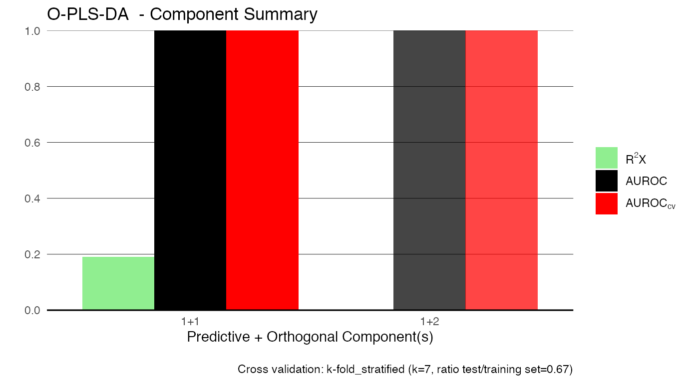
The model summary plot above describes the O-PLS parameters, with each set of bars corresponding to one fitted predictive and the specied number of orthogonal compononents. As you can see, the final model comprises one predictive and one orthogonal components (labelled 1+1). The set of bars on the right-hand side of the plot (slightly transparent) correspond to a model with 1 predictive and 2 orthogonal components (one orthogonal component more than found appropriate). This information is included for comparative purposes and for the evaluation of the automatic stop criteria.
The model summary can also be returned as a table with the following command:
opls.model@summary
| PC_pred | PC_orth | R2X | AUROC | AUROC_CV |
|---|---|---|---|---|
| 1 | 1 | 0.19 | 1 | 1 |
| 1 | 2 | NA | 1 | 1 |
R2X (R2Y) describes the amount of variation that the model describes in the X (Y) variable space. The range of R2X and R2Y is 0-1, with the latter indicating that all variation is explaine by the model.
The distance to the model in X space (DModX) is a dianostic measure to spot model outliers. The variable X refers to the independent variables, in this case the NMR matrix. We can access the DModX by calling the dmodx() function:
distX=dmodx(mod =opls.model, plot=T)
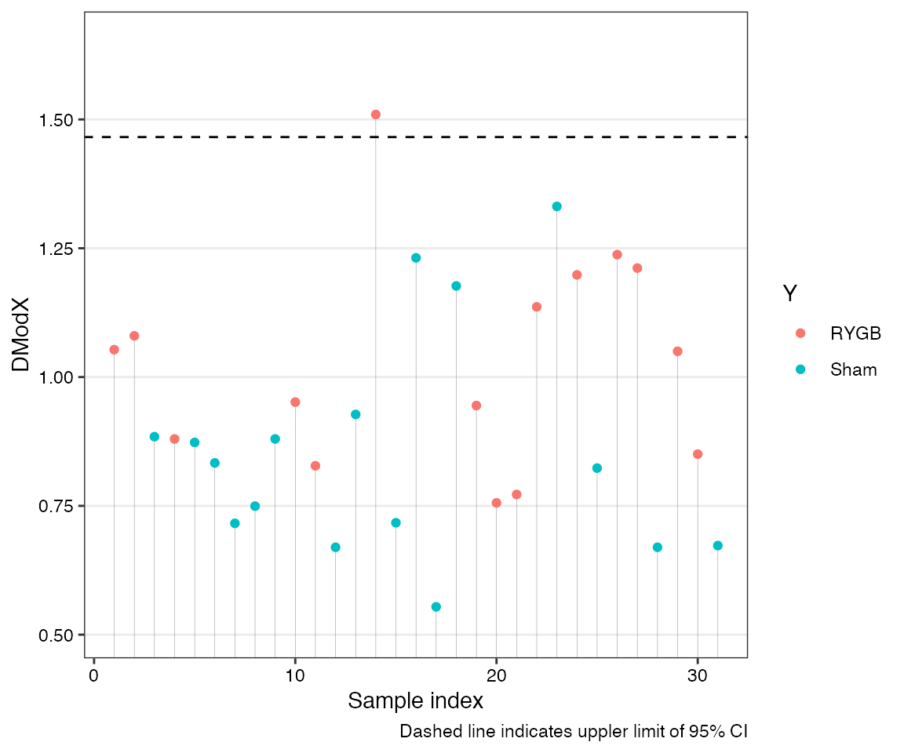
In the plot above each point represents a sample and the dotted horizontal line represents a 95% confidence interval. This threshold is specific for a particular model and varies for different OPLS models. Samples exceeding the confidence line are considered as moderate outliers. In particular if the DModX plot shows any patterns a further investigation should be untertaken. The distX variable in the above code snippet is a dataframe of DModX values which can be used for further instpections.
O-PLS model results are visualised in the scores plot, where the x-axis represents the predictive component and the y-axis an orthogonal component. The function plotscores() can be used for this taks (see section of PCA scores for function input arguments). An additional input argument is whether cross-validated (CV) scores should be plotted or not. CV scores are derived withing the internal model validation procedure and are considered as statistically robust. See the following code for an example:
# Plot OPLS scores plotscores(obj=opls.model, an=list( Surgery=an$Class[idx], # colouring according to surgery type Timepoint=an$Timepoint[idx]), # linetype according to timepoint title='OPLS - Scores plot', # plot title cv.scores = T) # visualise cross-validated scores
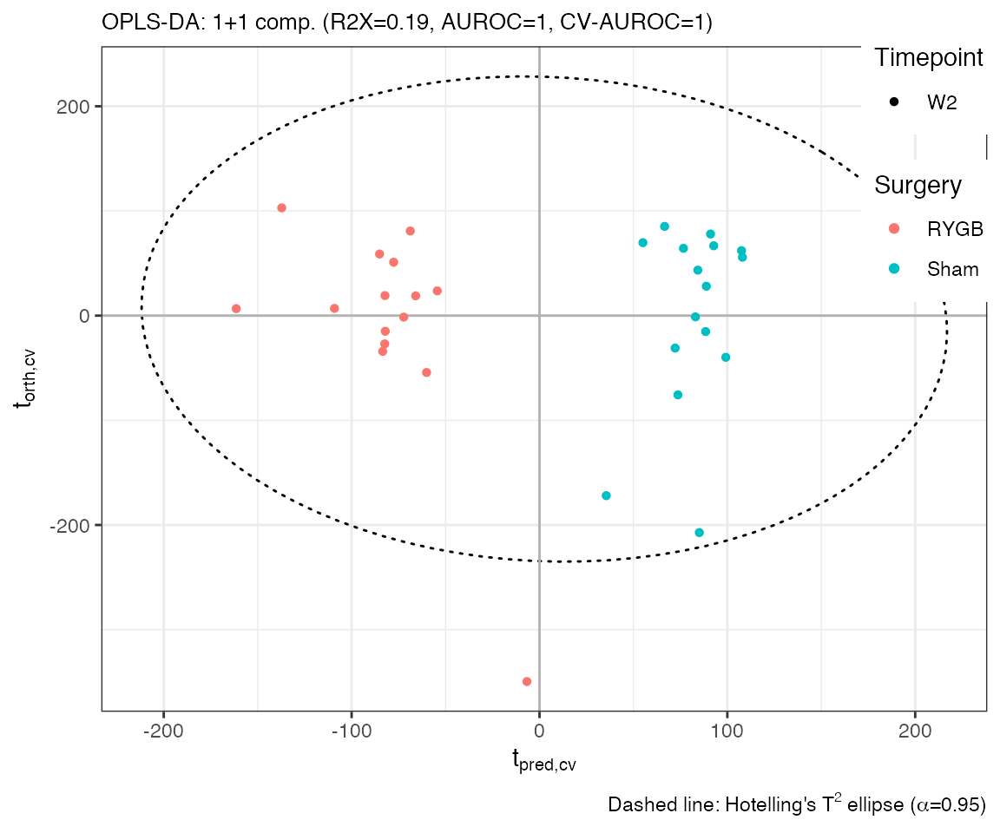
The resuling OPLS CV scores plot shows a perfect separation of both surgery types, with all predictive power focussed on the x-axis (that is characteristic for O-PLS, compared to PLS).
The orthogonal component (y-axis) is - in the mathematical sense - unrelated to the outcome variable Y. In some cases, its interpretation can give some insights about the study samples. In the present case, the first orthogonal O-PLS component is associated with effects resulting from spectral normalisation, which was part of the data pre-processing pipeline (not shown here).
The variable influence on the predictive component can be visualised with the plotload() function which plots a single O-PLS model line plot (see PCA section).
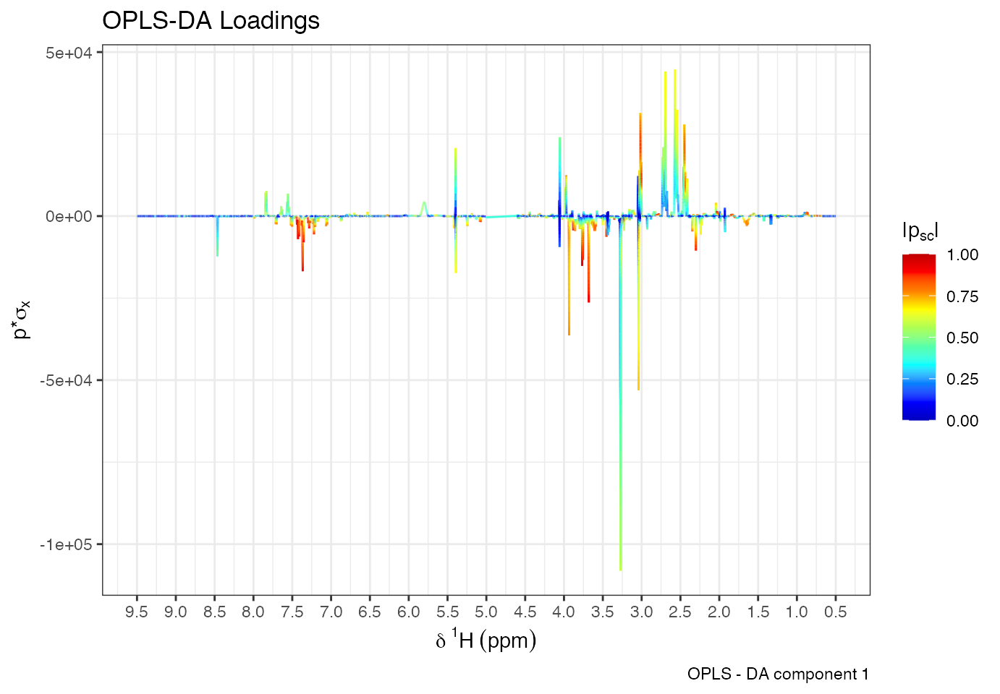
The function’s input argument type can be used to derive different visualisations of the model loadings, that is either a statistical reconstruction using covariances or back-scaled loadings. For details on both of these methods see help(plotload) or the original publication by Cloarec et al..4
The O-PLS loadings plot shown above highlights signals that are systematically different between the RYGB and Sham control group. In many cases, it is helpful to compare the O-PLS model loadings with spectra within certain chemical shift regions. The function specload() can be used for this task. From the loadings plot above we can see that the signals within the region of 7.45 - 7.5 ppm has a high model importance, so let’s have a closer look at this:
specload(mod=opls.model, shift=c(7.3,7.45), an=list( facet=an$Class[idx]), type='backscaled', alp = 0.5, title = 'Overlayed Spectra with Backscaled Loadings')
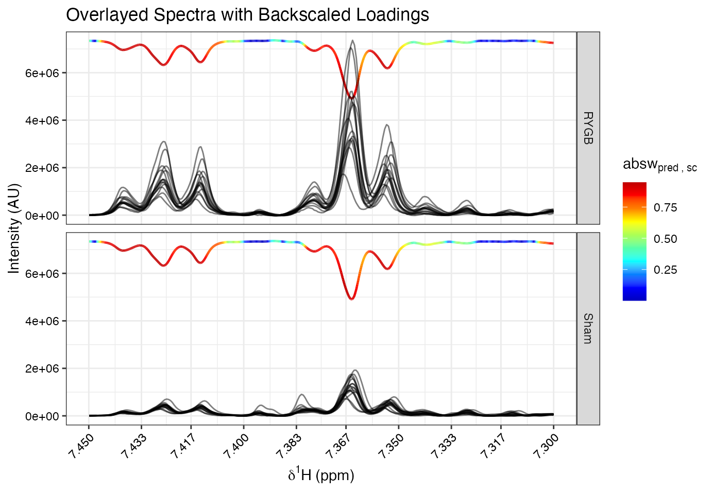
The colour gradient-filled line located in the upper plot area shows the OPLS model loadings (in this case: backscaled method). Plotted below are overlayed NMR spectra where the colour represents group membership. It is easy to see that there are group-related intensity differences for two multiplets centered around 7.365 and 7.425 ppm, with on average lower intensities in the Sham group.
The following section provides the standard pipeline for the identification of metabolites with high OPLS-DA variable importance.
A single compound/metabolite can have different chemical resonances, ie., it can give rise to multilpe signals in the NMR spectrum. A correlation analysis can help identifying signals from structural relationships. In the field of metabolomics, the spectral correlation analysis is termed Statistical Total Correlaion Spectrsocopy (STOCSY).
# define driver peak (the ppm variable where all other spectral variables will be correlated to) driver1=7.834 # perform stocsy stocsy_model=stocsy(Xn, ppm, driver1) # zoom-in different plot regions plotStocsy(stocsy_model, shift=c(7,8)) plotStocsy(stocsy_model, shift=c(3.9, 4)) # observed signals: # multiplet @ 7.56 # multiplet @ 7.65 # doublet @ 7.84 # doublet @ 3.97 ppm
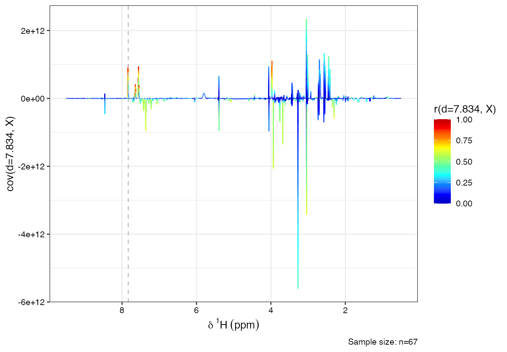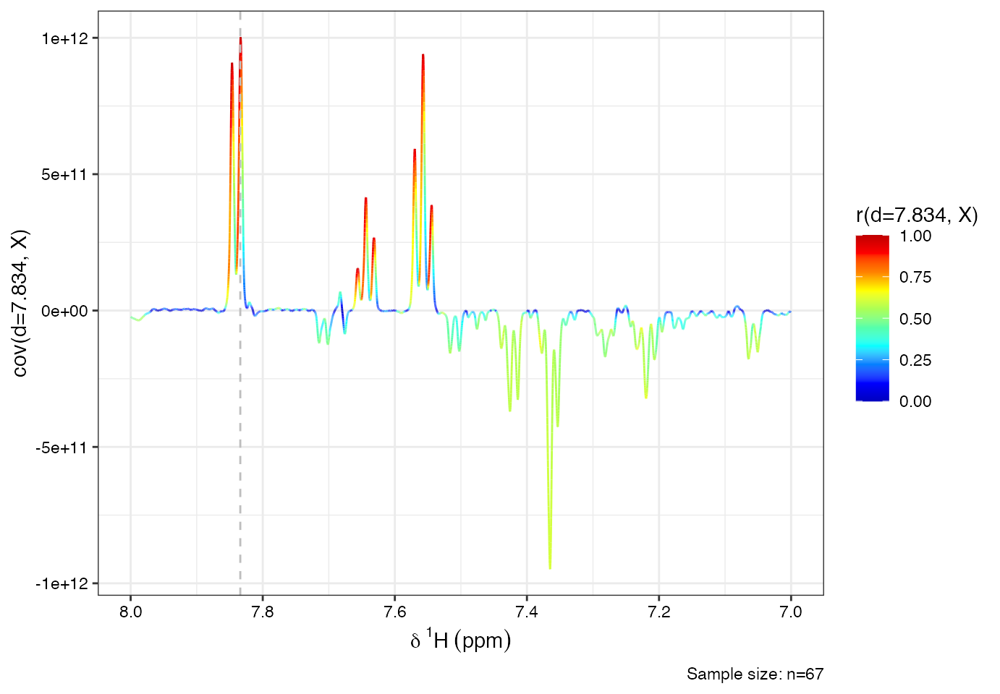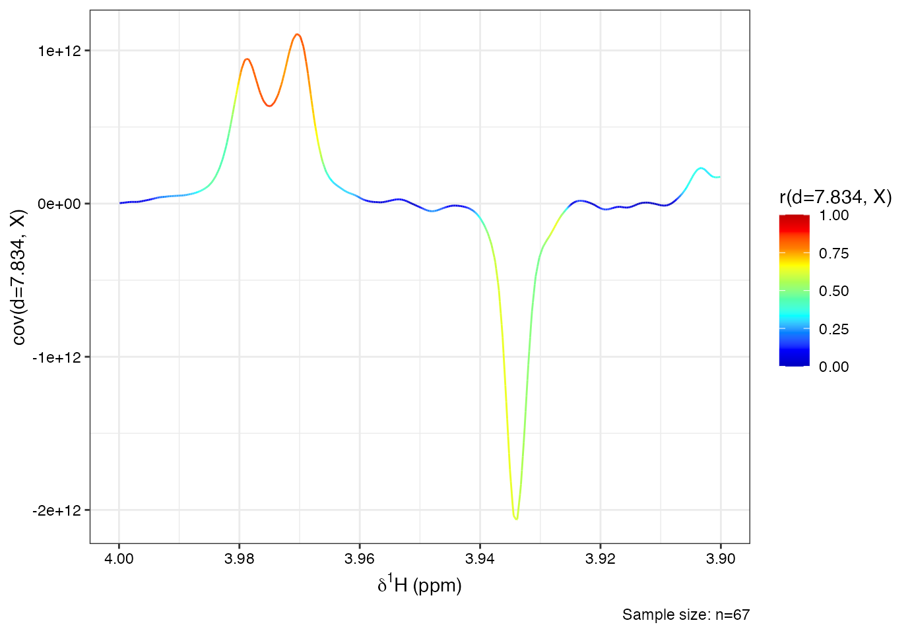
Identified signal patterns can be used to search spectroscopic databases that provide NMR reference data. One popular NMR reference database in the field of metabolic profiling is the *Human Metabolome Database (HMDB)**.
Navigate to the database website (www.hmdb.ca) und use the NMR search utility to find the identity of the compound using the chemical shift pattern extracted from the OPLS-DA loadings plot. Use a chemical shift tollerance of 0.01 ppm to account for small calibration differences.
The assignment of putative identities via database search based on the supervised analysis of NMR spectra is oftenonly a first step in identifying spectral signals. Further (2D NMR and spike-in) experiments are often performed to characterise completele unknown compounds.
This vignette illustrated multivariate statistical analysis of NMR-based metabolic phenotyping data with PCA and O-PLS-DA using the metabom8 package. Once a statistically robust OPLS model was established, information on variable importance was extracted using different model visualisations. STOCSY was performed to identify strucutural correlations of metabolites and this information was used to search putative metabolite identities on a spectral database.
Li, Jia V., et al. (2011) Metabolic surgery profoundly influences gut microbial-host metabolic cross-talk. Gut 60.9, 1214-1223.↩
In a sham surgery an operation is performed but the surgeon omitts the intended therapeutic procedure.↩
Trygg, J., et al. (2002). Orthogonal projections to latent structures (O-PLS). Journal of Chemometrics, 16.3, 119-28.↩
Cloared, O., et al. (2005). Evaluation of the Orthogonal Projection on Latent Structure Model Limitations Caused by Chemical Shift Variability and Improved Visualization of Biomarker Changes in 1H NMR Spectroscopic Metabonomic Studies. Analytical Chemistry. 77.2, 517-26.↩